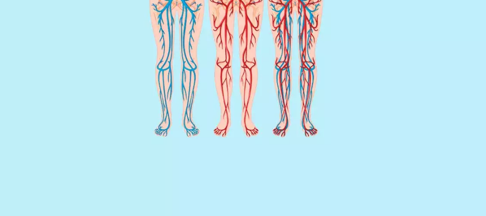
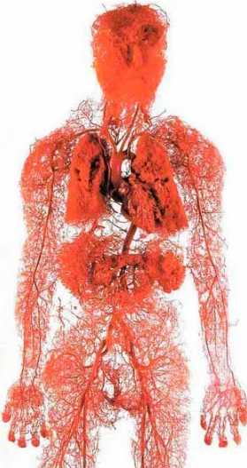
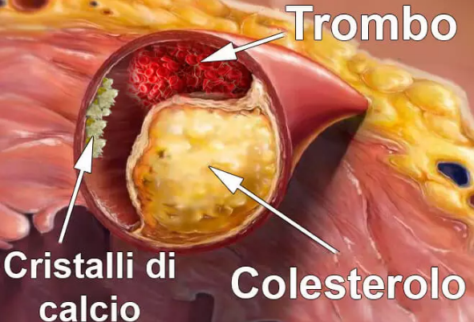

Articoli • Riserva aurea •
Interviste
Gonfiore, dolore e spasmi muscolari: 3 fedeli compagni di vasi «ripieni». Come si può risolvere questo problema a casa?
Chi è il peggior nemico del colesterolo e dei coaguli di sangue e il migliore amico dei vasi
sanguigni?
Tutti sanno che l'ictus e l'attacco cardiaco sono le conseguenze di un'occlusione dei vasi sanguigni
con il colesterolo che può portare a patologie cardiovascolari. Tuttavia, poche persone si rendono
conto che questa è solo la punta dell'iceberg. I vasi
"ostruiti" possono causare 9 patologie croniche su 10 che sono considerate incurabili.
Abbiamo ricevuto le risposte a quelle domande dall'esperto
Antonio Esposito.
Antonio Esposito ha studiato problemi cardiovascolari per
oltre 15 anni. È autore di molti articoli relativi a
questo argomento.
Antonio Esposito è convinto che il 90% dei vasi sanguigni
sia responsabile della salute e che dalla loro purezza
dipenda il nostro benessere.
Perché i vasi sanguigni sono responsabili del 90% della nostra salute?
– Pochi sanno che il più grande organo interno del corpo umano è il sistema vascolare.
Il sistema vascolare umano è 2,5 volte più lungo dell'equatore terrestre

Provate a immaginare! Se estraessimo i vasi sanguigni da una persona e li collegassimo insieme, otterremmo un nastro lungo quasi 100.000 chilometri.
I vasi sanguigni non sono soltanto dei tubi, attraverso
i quali scorre il sangue. È un organo unico e complesso
e qualsiasi suo disturbo causa la malattia.
I vasi "ostruiti" – vuol dire la fame di tutti gli organi.
Il peso in eccesso è direttamente collegato ai vasi. I vasi
sanguigni ostruiti dal colesterolo causano la fame negli
organi umani, perché essi non ricevono abbastanza nutrienti,
necessari per un funzionamento sano. Il cervello invia il
messaggio "devi mangiare". E l'uomo mangia. Ma gli organi,
come prima, non ricevono la quantità necessaria di nutrienti
a causa del blocco dei vasi sanguigni. Il cervello segnala
ancora una volta che hai bisogno di mangiare e questo si
ripete più e più volte.
Da qui, è il costante desiderio di mangiare e il desiderio
di cibi dolci e grassi. Il corpo ha bisogno di calorie.
Quando i miei colleghi dicono alla gente "Hai la pressione
alta a causa del sovrappeso", confondono causa ed effetto.
L'aumento della pressione non si verifica a causa
dell'eccesso di peso, ma viceversa.
Cambierei il proverbio "Senza salute non c'è felicità" così: "Una vita sana è possibile solo con vasi sanguigni puliti".
Cos'altro ostruisce i vasi sanguigni oltre al colesterolo?
- Noi tutti sappiamo dei pericoli di colesterolo. Può
ostruire i vasi sanguigni, assottigliare le pareti dei vasi
sanguigni e quindi influenzare la circolazione sanguigna.
Tuttavia, la colpa non è solo del colesterolo.

6.1 kg è il peso totale dei prodotti finali di scambio accumulati nei vasi all'età di 50 anni.
Colesterolo
– Depositi di colesterolo o placche aterosclerotiche
costituiscono circa il 65-70% della contaminazione
vascolare.
All'età di 50 anni nei vasi del corpo si accumulano fino a 5
kg di placche di colesterolo. I depositi di colesterolo
restringono il lume dei vasi sanguigni di 4-5 volte.
Questi depositi da soli non sono pericolosi per la vita,
peggiorano solo la qualità della vita, aumentano la
pressione sanguigna e causano mal di testa e mal di schiena,
debolezza e depressione. La massa di coaguli di sangue nei
vasi sanguigni è molto più pericolosa.
Massa del coagulo di sangue
La massa del coagulo di sangue formato all'interno dei vasi
sanguigni varia da 800 g a 1 kg. Tuttavia, il loro pericolo
sta nella loro instabilità. Un coagulo di sangue può
staccarsi in qualsiasi momento e interrompere il flusso
sanguigno nella gamba, ostruire le arterie sottostanti,
provocare ictus, ischemia epatica, collasso polmonare,
emorroidi. Il blocco anche dei piccoli vasi del piede alla
fine porta alla necrosi-cancrena.
Sali di calcio
I sali di calcio nei vasi sanguigni sono residui chimici di
vari prodotti e additivi alimentari. In 50 anni potrebbero
accumulare circa 300-400 g. La maggior quantità di sali di
calcio può accumularsi nei vasi cerebrali.
In caso di vasocostrizione immediata con spasmo causato da
stress, attività fisica o condizioni meteorologiche, un
cristallo acuto può rompere la parete del vaso. La rottura
dei vasi sanguigni del cervello è chiamata ictus emorragico.
4 segni evidenti dei vasi malsani e altri 7 nascosti
– Quali sono i segni del blocco dei vasi sanguigni? Come riconoscere il segnale del corpo: "Pulisci urgentemente i vasi sanguigni"?
— Se hai più di 45 anni e non hai mai preso prodotti per
pulire i vasi sanguigni, è probabile che tu possa avere
problemi in qualsiasi momento.
45 anni è il limite, dopo il quale è importante pulire i vasi sanguigni
Il blocco dei vasi sanguigni con colesterolo e coaguli di
sangue è in realtà un processo naturale di invecchiamento.
La cattiva alimentazione, l'assunzione di farmaci, il fumo e
il consumo di alcol accelerano il processo di 5-8 volte.
Purtroppo, è la realtà innegabile, in cui viviamo.
Il principale segno di contaminazione dei vasi
4 Problemi di salute che possono essere causati da un'occlusione vascolare:
- 1. Pressione alta La pressione arteriosa fluttuante o troppo alta, che può essere ridotta solo con qualche rimedio, è il segno principale. Le vene aspettano che tu le pulisca!
- 2. Vene varicose Vasi bruttamente gonfi nelle gambe, pesantezza, dolore e gonfiore. Residui di colesterolo e coaguli di sangue ostruiscono le valvole venose. A poco a poco appaiono gli asterischi vascolari, che alla fine si trasformano in reti vascolari. Così si formano le vene varicose.
- 3. Emorroide. L'occlusione dei vasi del retto, che rimuove il sangue, provoca il gonfiore dei noduli emorroidari. E i depositi nei vasi sanguigni possono causare la rottura del retto.
- 4. Osteocondrosi. Cattiva circolazione nelle cartilagini. I tessuti cartilaginei si induriscono, si consumano e non hanno il tempo per ripristinarsi, non rigenerano, non si asciugano e perdono la funzione idratante. I sali non si lavano e si accumulano in continuazione.
7 sintomi nascosti:
- 1. Tumefazione I vasi ostruiti non possono pompare il liquido. Il metabolismo del sale e dell'acqua è alterato. Di sera, le gambe si gonfiano così tanto che le calze lasciano dei segni profondi sulle caviglie. Viso gonfio e borse agli occhi. Dita, da cui non si può più togliere gli anelli. Gonfiore addominale indica il gonfiore degli organi interni.
- 2. Ronzio nelle orecchie Da un suono debole a un forte grido che impedisce di concentrarsi. Questa è una conseguenza dell'aumento della tensione dei vasi cerebrali che preme sui timpani.
- 3. Vertigini Sensazione di intossicazione e vertigini improvvise. Quest'ultimo segnala che il sistema di determinazione dell'equilibrio non riceve abbastanza sangue. La vittima di questo può spesso essere l'udito.
- 4. Insonnia Ti senti assonnato e impotente, ma non riesci ad addormentarti fino a mezzanotte? Ciò è dovuto alla scarsa irrorazione della ghiandola pituitaria. Essa smette di produrre melatonina, che è l'ormone del sonno.
- 5. Diminuzione dell'energia Ti senti come se non avessi la forza e l'umore per niente, il più delle volte stai sdraiato a letto e mangi. Ciò accade quando il nostro corpo entra in modalità di risparmio energetico. I vasi sanguigni ostruiti non forniscono i nutrienti necessari agli organi, e il corpo riduce al minimo la sua attività in modo da non morire.
- 6. Disturbi visivi Stelle, punti davanti agli occhi e visione offuscata. Questi sono dei segni di patologie vascolari dell'occhio.
- 7. Dolore alle articolazioni Dolore alle articolazioni nel periodo di cambiamento del tempo. Al risveglio, ci sentiamo disabili paralizzati e le nostre ossa fanno male. L'intorpidimento è relativamente lungo. Ciò è dovuto alla perdita delle proprietà protettive del liquido sinoviale.
Hai almeno un segno familiare tra questi? Il tuo corpo
segnala che è ora di pulire i vasi sanguigni.
Le persone spesso soffrono di diversi sintomi, ma a volte li sperimentano tutti allo stesso tempo.
La maggior parte delle persone cerca di risolvere i problemi
separatamente. Rimedi antipertensivi, pomate per vene
varicose, emorroidi, gel contro osteocondrosi e,
naturalmente, analgesici, analgesici e ancora analgesici…
Ma, di solito, è un continuo spreco di denaro. Perché la
causa di tutti i problemi è l'ostruzione dei vasi sanguigni.
È importante capire che è meglio iniziare a ripristinare il
corpo con la pulizia dei vasi sanguigni.
Come pulire i vasi sanguigni da colesterolo, coaguli di sangue e altri depositi?
- Purtroppo, molti rimedi hanno effetti collaterali. Perciò, è possibile capire le persone che sono rimaste deluse.
Posso menzionare solo un prodotto che aiuta a pulire i vasi
sanguigni ed è Cardiofort. Cardiofort è in grado di aumentare la
speranza di vita di circa 11-17 anni, alleviare il dolore,
liberarti dalla debolezza.
I vasi possono anche essere puliti chirurgicamente, ma c'è
un certo rischio di complicanze ed effetti collaterali.
L'uso di Cardiofort aiuta a pulire i vasi sanguigni, dalle
arterie grandi ai capillari piccoli e fragili*.
* I risultati dipendono dalle caratteristiche individuali
I componenti vegetali nella composizione di Cardiofort
contribuiscono ad eliminare colesterolo nei vasi sanguigni;
coaguli di sangue attaccati alle pareti dei vasi sanguigni;
depositi di calcio e altri elementi.
Cardiofort aiuta a rimuovere tutti gli eccessi che si sono accumulati nei vasi
sanguigni nel corso degli anni e che sono tossici per il corpo.
La pulizia dei vasi sanguigni aiuta a liberarsi dal mal di testa e dal ronzio nelle orecchie. Il cervello inizierà a ricevere la giusta quantità di nutrienti, quindi sarà in grado di lavorare più velocemente. I pensieri diventeranno chiari.
– Immaginiamo di aver comprato Cardiofort, apriamo una scatola piacevole al tatto, tiriamo fuori una
capsula e la prendiamo durante i pasti due volte al giorno... Che succede? Come funziona Cardiofort?
– Una volta entrato nel corpo, il prodotto inizia a funzionare come un laboratorio naturale. Gli
estratti vegetali aiutano a "far esplodere" i depositi di colesterolo nei vasi sanguigni, garantendo
così una circolazione sanguigna libera.
Cardiofort è un tesoro di estratti vegetali che, grazie al suo lavoro armonioso, aiuta a mantenere i vasi sanguigni puliti ed elastici.
Le capsule sono in grado di mostrare buoni risultati, poiché portano degli estratti vivi nel corpo,
che lavorano in modalità attiva.
Rimuovere "depositi"
Cardiofort aiuta a purificare il corpo dal colesterolo. Gli elementi del prodotto aiutano a frazionare
le particelle di colesterolo incollate alle pareti dei vasi sanguigni. Si rilascia il canale per la
libera circolazione del flusso sanguigno. Gli organi
hanno la possibilità di ricevere la quantità necessaria del sangue.
La pressione sanguigna torna alla normalità
Grazie al biancospino nella sua composizione, i vasi sanguigni si dilatano e l'irrorazione del cuore
aumenta, ciò aiuta a ridurre la pressione sanguigna e normalizzare il lavoro del sistema
cardiovascolare.
Normalizzazione delle condizioni
Cardiofort aiuta ad eliminare i rifiuti di colesterolo e stimola la corretta combustione dei grassi.
Inizi a sentire più forza, senti il bisogno di muoverti, senti di poter smuovere le montagne.
Migliorare il funzionamento del cuore
L'aglio è in grado di ridurre la pressione sanguigna sistolica nel caso di ipertensione. L'assunzione
di aglio ostacola l'aggregazione piastrinica e ha anche un effetto antitrombotico.
È come deporre un fardello e respirare facilmente. La frequenza cardiaca si normalizza. Puoi
dimenticare l'aritmia e la tachicardia. Le punte improvvise nel cuore probabilmente scompariranno.
Il rischio di sviluppare un attacco cardiaco è ridotto a zero.
Effetto farfalla
Cardiofort è come il movimento delle ali di una farfalla che innesca una reazione a catena piena di
eventi incredibili. Partendo dalla rimozione dei rifiuti accumulati nei vasi per decenni, passo dopo
passo, Cardiofort è in grado di innescare una reazione
a catena per ripristinate il corpo.
Il ciclo di Cardiofort – favorisce il rinnovamento del corpo
Risveglio facile
Ci svegliamo facilmente e ci alziamo dal letto e non dobbiamo aspettare che le gambe, la schiena e il collo si riprendano dall'intorpidimento iniziale.
Il nostro corpo sarà pieno di energia e forza fin dalla prima mattina, grazie alla completa pulizia
dei vasi sanguigni e all'alimentazione degli organi durante la notte. L'apporto sanguigno sarà
sufficiente in ogni parte del corpo, ciò ti darà abbastanza
forza per iniziare la nuova giornata.
Sapore della colazione
Mangiamo un pezzo di pane con burro e frittata che vengono utilizzate sia dal nostro fegato che dallo
stomaco. Non saremo più tormentati dall'amarezza o dal dolore acuto allo stomaco. Cardiofort pulisce il
vaso sanguigno che alimenta lo stomaco al punto
che esso può digerire anche l'unghia.
Forte come un toro
Una volta usciti di casa, non dobbiamo più preoccuparci dei nostri piedi, e anche dopo un'intera
giornata di cammino, non si stancano e non si gonfiano. Scarpe e calzini non lasciano più segni sui
nostri piedi.
Tranquillità assoluta
Sarai calmo ed equilibrato. Il dolore costante che oscura la coscienza e impedisce la concentrazione
scompare completamente. Man mano che il dolore si attenua, i suoni e gli odori, a cui sei abituato,
diventeranno molto più intensi.
Allegria da invidiare
Anche dopo una giornata intensa, tornerai a casa con la testa chiara. Il tuo cervello funzionerà con
la precisione di un orologio svizzero e non ti stancherai affatto.
Sonno piacevole
Andando a letto, ti addormenti quasi immediatamente, non come prima, quando ti giravi per tutta la
notte e non riuscivi a dormire. Ora tutto sarà molto più facile – decidi tu, quando andare a letto, e
il corpo reagirà quasi immediatamente.
Programma di sconto e deficit
– Cardiofort è scomparso da quasi tutte le farmacie? Perché?
– Purtroppo è vero. Cardiofort non è più in vendita nelle farmacie dall'inizio dell'anno.
Il conflitto è stato causato dall'avidità delle catene farmaceutiche private, ciò ha costretto il
produttore di Cardiofort a pagare per ogni confezione venduta – 15 euro! Oltre a questo, alcune farmacie
hanno aumentato i prezzi del prodotto. A volte il
prezzo saliva fino a 205 Euro!
Cardiofort è un rimedio che molti esperti raccomandano di assumere ogni 7-10 anni. Dopo aver pulito il
sangue con Cardiofort, nella maggior parte dei casi, la gente si sente molto meglio e smette di
acquistare grande quantità di altri rimedi. Per questo motivo,
le farmacie perdevano soldi. Ecco perché volevano che Cardiofort fosse così costoso.
Di conseguenza, il distributore di Cardiofort ha rescisso i contratti con tutte le farmacie ed è passato
alle vendite online esclusive. Cardiofort è ora molto più accessibile rispetto alle farmacie.
Programma di sconto "Vasi sanguigni puliti"
Il distributore di Cardiofort ha lanciato un programma speciale nell'ambito del progetto di telemedicina
(mezzi online). Chiunque partecipi al programma, può acquistare Cardiofort al nuovo prezzo speciale di
39€!
– Cosa devo fare per partecipare al programma?
— Per ordinare Cardiofort ad un prezzo speciale, è necessario rispettare alcune condizioni:
Condizioni di utilizzo di Cardiofort:
- Ordinare Cardiofort per uso personale Il Cliente e il destinatario devono essere la stessa persona. Questo è necessario per combattere gli intermediari che cercano di acquistare Cardiofort in partite grosse e vendere di più.
- Effettuare l'ordine tramite il modulo ufficiale del programma
- Il modulo d'ordine ufficiale garantisce il prezzo del distributore e ti protegge dagli intermediari.
– Per quanto durerà il programma di sconto?
Finché non è finita la partita di Cardiofort. In genere, la merce esaurisce fra circa 3-4 settimane. Ed
è nonostante il fatto che non ci sia la pubblicità in TV e radio. Le persone che hanno già scoperto
l'efficacia del prodotto, lo ordinavano per amici
e parenti. Anche per noi è stata una sorpresa sapere che Cardiofort si sarebbe diffuso così rapidamente.
Ultimo giorno di sconti per
Cardiofort 27.05.2022 compreso.
Per quello, ti consiglio di ordinare Cardiofort il più presto
possibile. Quest'anno il programma non sarà più ripetuto.
Il 27.05.2022 le confezioni di Cardiofort che sono ancora disponibili al prezzo promozionale:
 23 pz
23 pz
Commenti